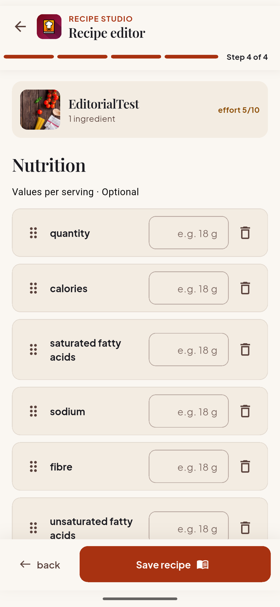

Flutter recipe editor evidence
The reviewed artifact is the Android capture below. The shipping Flutter
source references assets/plates/recipe-thumbnail.png from
lib/widgets/recipe_editor/editorial_editor_shell.dart.
